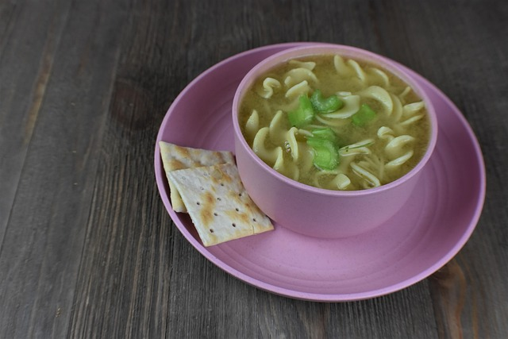

Chicken Soup

Description
Chicken soup is a classic comfort food known for its soothing flavor and simple preparation. It combines tender
chicken, fresh vegetables, and savory broth for a warm and nourishing meal that's great for any time of year.
This recipe is easy to adapt—add noodles, rice, or extra veggies to make it heartier, or keep it light for a quick
and wholesome dish. It's the kind of meal that feels homemade and comforting with minimal effort.
Ingredients
- 1 tablespoon olive oil
- 1 medium onion, diced
- 2 carrots, sliced
- 2 celery stalks, sliced
- 2 garlic cloves, minced
- 6 cups chicken broth
- 2 cups cooked, shredded chicken
- 1 teaspoon dried thyme
- 1 teaspoon dried parsley
- 1/2 teaspoon salt
- 1/4 teaspoon black pepper
- 1 cup egg noodles (optional)
Steps
- Heat olive oil in a large pot over medium heat. Add onion, carrots, celery, and garlic. Cook until
vegetables are softened, about 5 minutes.
- Pour in chicken broth and bring to a boil.
- Stir in shredded chicken, thyme, parsley, salt, and black pepper. Reduce heat and let simmer for 15 minutes.
- If using egg noodles, add them to the soup and cook according to package directions until tender.
- Taste and adjust seasoning as needed.
- Serve hot, garnished with fresh herbs if desired.
Home